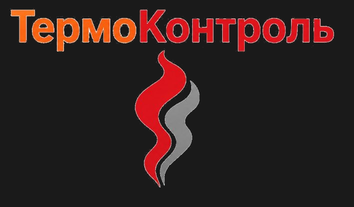

ООО «ТермоКонтроль» — специализированная компания, оказывающая полный спектр услуг по техническому обслуживанию компьютерной техники и сопровождению программного обеспечения для организаций и частных лиц.
Компания работает на рынке IT-услуг более 5 лет. За это время мы обслужили свыше 300 клиентов и завоевали репутацию надёжного партнёра в сфере технической поддержки. Основу деятельности составляют диагностика оборудования, ремонт ноутбуков, установка и настройка программного обеспечения, защита информации и IT-аудит предприятий.
На вооружении наших специалистов — современные профессиональные инструменты: AIDA64 Extreme для комплексного аудита систем, HWiNFO для мониторинга компонентов в реальном времени, а также лицензионное прикладное программное обеспечение.
Миссия: обеспечить бесперебойную работу IT-инфраструктуры наших клиентов, используя передовые методы диагностики и профессиональный подход к обслуживанию.
Гарантия качества. Мы предоставляем гарантию на все виды выполненных работ и используем только проверенное оборудование и лицензионное ПО.
Прозрачность. Стоимость работ согласовывается с клиентом до их начала. Чёткий прайс-лист без скрытых платежей.
Индивидуальный подход. Каждый клиент получает решение, разработанное с учётом конкретных задач и особенностей его техники.
| Полное наименование | Общество с ограниченной ответственностью «ТермоКонтроль» |
| Сокращённое | ООО «ТермоКонтроль» |
| Вид деятельности | Техническое обслуживание компьютерной техники и сопровождение ПО |
| Телефон | +7 (495) 123-45-67 |
| info@termocontrol-it.ru | |
| Сайт | termocontrol-it.ru |
| Режим работы | Понедельник – Пятница: 9:00–18:00 |
| Опыт | Более 5 лет работы на рынке IT-услуг |
| Клиенты | Свыше 300 обслуженных организаций и частных лиц |
| Удовлетворённость | 98% довольных заказчиков по итогам опросов |
| Инструменты | Лицензионное ПО: AIDA64 Extreme, HWiNFO и другие |
| Гарантия | Предоставляется на все виды выполненных работ |